Fig. 1) The Buddha of Seiryōji, frontal view color
(Credit: Natural Treasures of Japan Magazine, Published 8 July 1997 by The Asahi Shimbun)
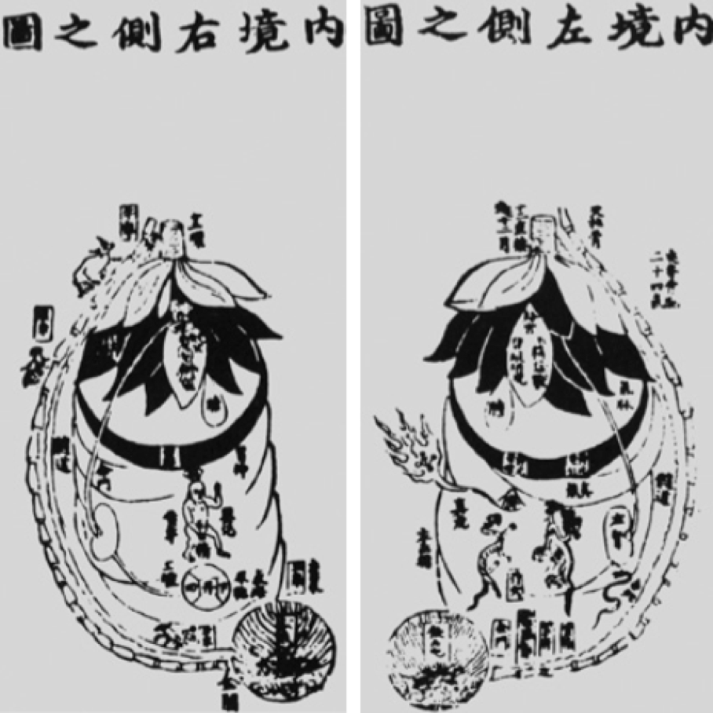
Fig. 3) Ming Dynasty Woodblock prints (1445) of Yanluozi’s Chart of the Right Side of the Inner Realm (left) and Chart of the Left Side of the Inner Realm (right), detail
Note the alchemical symbols in the lower abdomen as well as the twenty-four vertebrae. Twenty-four is not only the accurate number of vertebra but is also a sacred number within Daoism, linking this piece to Daoist numerology. Additionally, note the goat, deer, and oxen depicted travelling up the spines. These animal motifs reference the Buddhist Lotus Sutra. Therefore these charts illustrate how both of China’s two major religions, Daoism and Buddhism influenced the Medieval Chinese understanding of the body.
(Credit: Huang 2012:68, See Works Cited in journal)

Fig. 4) Ming Dynasty Woodblock prints (1445) of Yanluozi’s Chart of the Front Side of the Inner Realm (left) and Chart of the Back Side of the Inner Realm (right), detail
Note the downward facing multi-petal “flower” motif at the top of these charts. This motif is common in Chinese Medieval representations of the internal torso.
(Credit: Huang 2012:69, See Works Cited in journal)

Fig. 5) Replica of a Song Dynasty Bronze Acupuncture Mannequin, Frontal View
Note the erect clinical posture signaling its use in medical instruction and the distended earlobes, a motif common in Buddhist art
(Credit: Atlanta168)

Fig. 6) 17th Century European Ivory Anatomical Mannequins with removable organs, detail
(Credit: Harvey Cushing & John Hay Whitney Medical Historical Library)
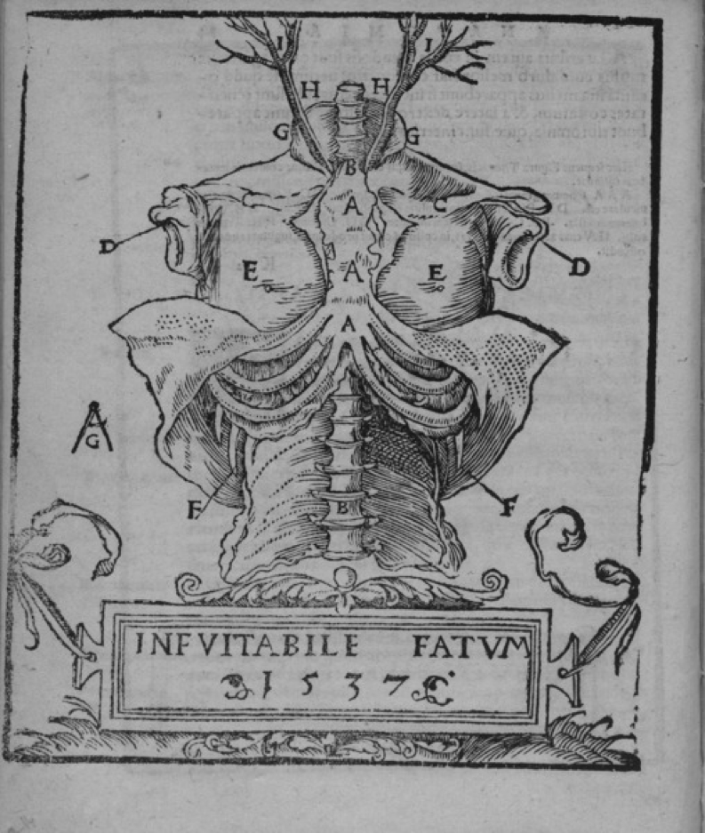
Fig. 7) 1537 Print of Mondino de Luzzi’s Anathomia originally written in 1316, detail
(Credit: Wikimedia Commons)

Fig. 8) Early 15th Century “Movable Arm” Crucifix from Hluboka, Czech Republic, detail showing wooden joint
(Credit: Kopania 2009:134, See Works Cited in journal)

{kind=link}
{kind=link}
{kind=link}

Fig. 10) 12th Century Puy-de-Dôme “Christ on the Cross” Paris, France, detail
Note the carved wooden hair painted with brown pigment. This method of depicting hair is the most common among moveable arms Christ sculptures. The animal hair attached with adhesive on the Cristos de Burgos is unique and comparatively much more life-like.
(Credit: Fernandes 2013, See Works Cited in journal)

Fig. 11) Cristo de Burgos, detail image showing its gruesome depictions of Christ’s bloody wounds
(Credit: Kopania 2009: 559, See Works Cited in journal)
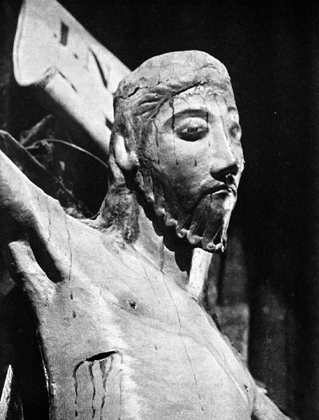
Fig. 12) Bouças Christ Bouças, Portugal, detail
Note that the Bouças moveable arms Christ sculpture does have wounds and blood droplets painted on it but not nearly at the density of those on the Cristos de Burgos.
(Credit: Kopania 2009: 559, See Works Cited in journal)
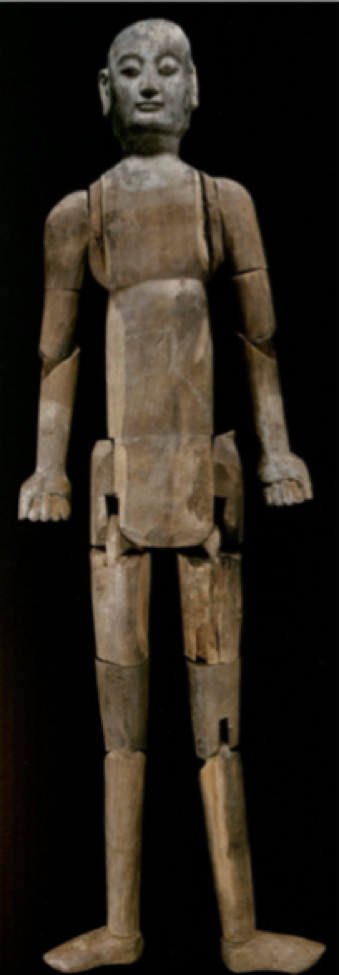
Fig. 13) Liao Dynasty (11th - early 12th century) Yihenuoer Manikin from a tomb at the Yihenuoer Township, Balin Right Banner, Mongolia, frontal view
Note that the head and hands are rendered in more detail than the boxy torso and are painted with a faint light pigment. This is because only those portions of the sculpture would be exposed when the mannequin was clothed.
(Credit: Shen 2006:218, See Works Cited in journal)
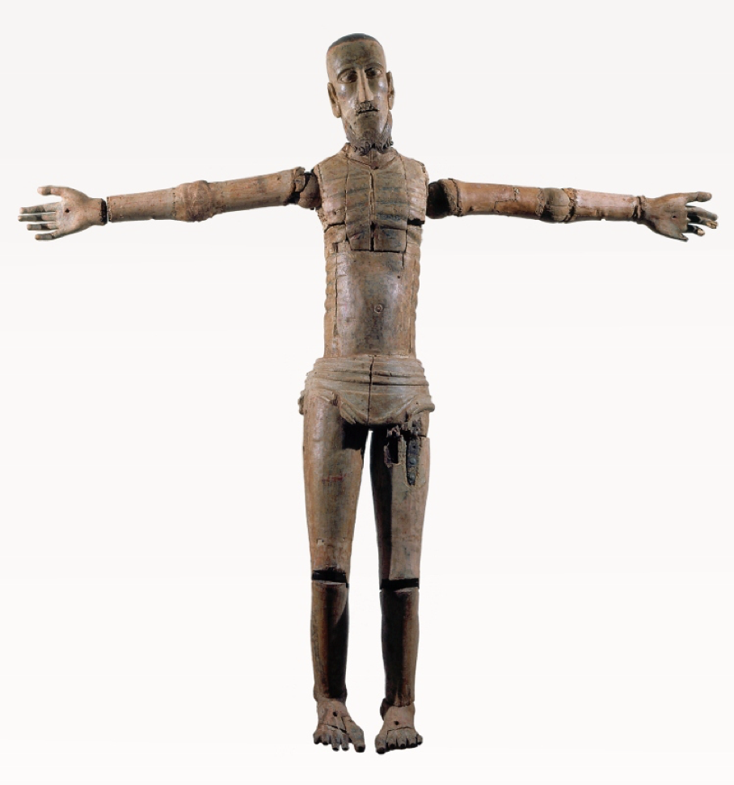
Fig. 14) 12th Century “Articulated Christ,” Portugal, frontal view
Compare the joints and mechanics in this image to those of the Liao Dynasty Mannequin. Also, note that the torso is more detailed than the torso of the Liao Mannequin, specifically the ribs are articulated. This is because unlike the Liao Dynasty mannequins, the upper bodies of moveable arms Christ sculptures are typically not covered.
(Credit: Fernandes 2013, See Works Cited in journal)

Fig. 15) Liao Manikin in Situ, From a tomb in Balin Left Banner, Inner Mongolia, view in situ
Note that the mannequin is clothed exposing only the head and hands, which are rendered in fine detail.
(Credit: Shen 2016:22, See Works Cited in journal)
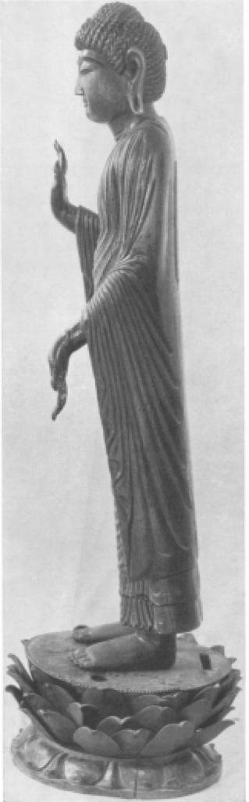
Fig. 16) The Buddha of Seiryōji, side view
Note the extreme angle of the Buddha of Seiryōji’s forward leaning posture.
(Credit: Henderson & Hurvitz 1956:7, See Works Cited in journal)
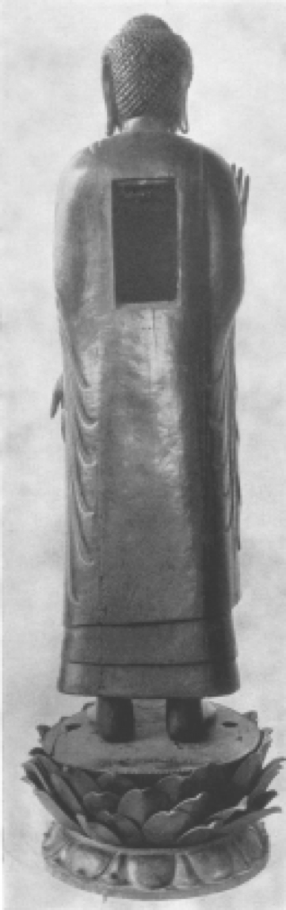
Fig. 17) The Buddha of Seiryōji, back view showing cavity
(Credit: Henderson & Hurvitz 1956:8, See Works Cited in journal)

Fig. 18) View of the objects packed in the Buddha of Seiryōji before their removal in 1956
(Credit: Henderson & Hurvitz 1956:9, See Works Cited in journal)
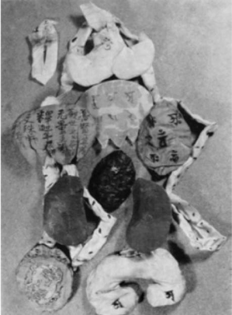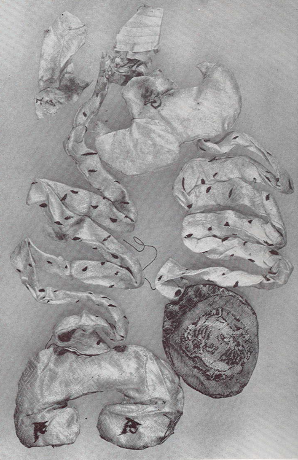
Fig. 19) The models of internal organs removed from the Buddha of Seiryōji in 1956
(Credit: Huang 2012:77, See Works Cited in journal)

Fig. 20) The models of internal organs removed from the Buddha of Seiryōji in 1956, color
(Credit: Henderson & Hurvitz 1956:23, See Works Cited in journal)

Fig. 21) internal organ model thought to be the stomach, detail
Note the downward facing multi-petal “flower” design of this internal organ model, which references the use of this shape in other Chinese Medieval depictions of the internal torso, such as Yanluozi’s Charts of the Inner Realm.
(Credit: Henderson & Hurvitz 1956:23, See Works Cited in journal)
 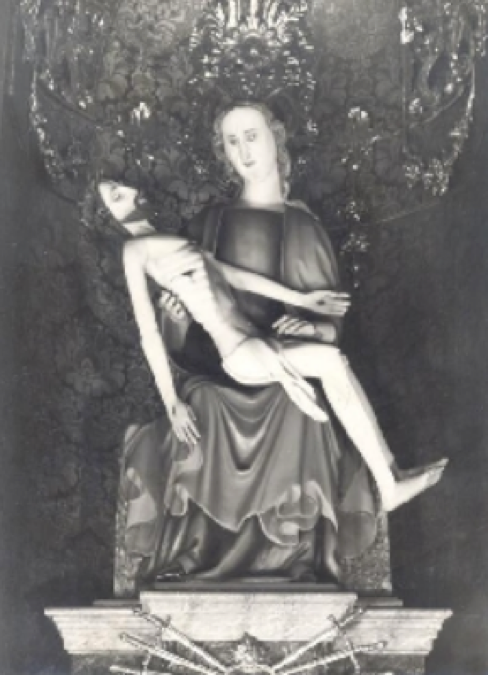
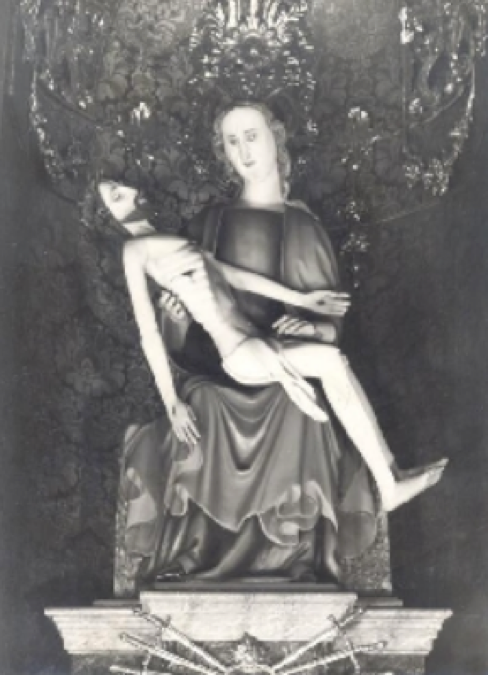
Fig. 22) Pietà with moveable arms Christ from St. James church, Jihlava (~1330), contemporary image (left in color), image from late 18th century (right in blac and white)
The moveable arms Christ sculpture is detachable and can therefore be removed and displayed on a cross. Adding joints to moveable arm Christ sculptures may have been necessitated by the need to use the sculpture in both these positions of display.
(Credit: Bartlová 2014:2,5, See Works Cited in journal)
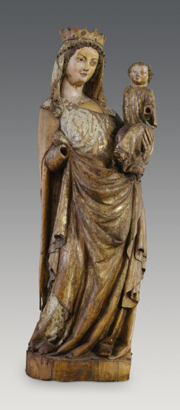
Fig. 23) Virgin of Toporc (~1340-1350), From the Church of SS. Philip and James, Toporc, Slovakia
The head of the Christ Child can be rotated through using a hidden mechanism involving string wrapped around a dowel. This movement animated the sculpture during liturgical plays. Mechanical devotional icons like the Virgin of Toporc were popular during the Gothic period.
(Credit: Hungarian National Gallery)
{kind=link}
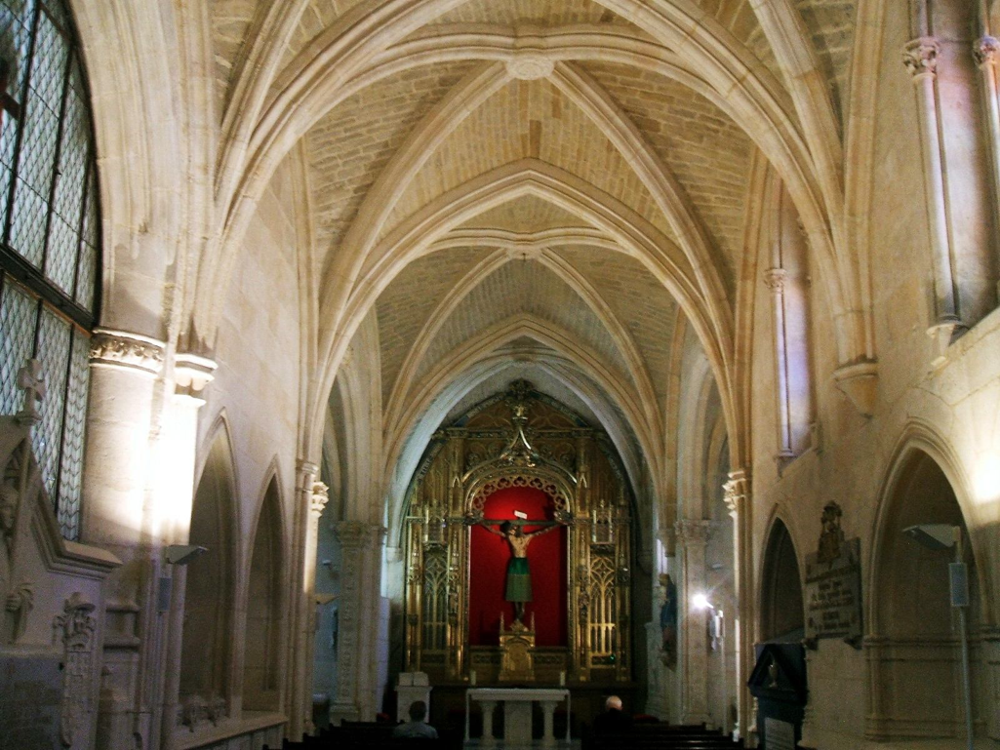
Fig. 24) Interior of the Cathedral of Burgos
Note the prominent placement of the Cristos de Burgos in the center of the chapel’s main altar. This placement demonstrates that the Cristos de Burgos was intended to be view by worshippers.
(Credit: Wikimedia Commons)
{kind=link}
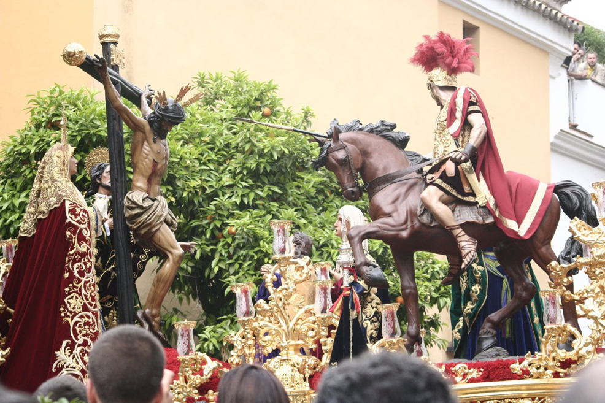
Fig. 25) Religious Procession with Crucifix
Medieval religious processions, like the modern one pictured above, would have put worshippers in close proximity to moveable arms crucifixes and animated them through movement, intensifying their spiritual power.
(Credit: Esacademic)
{kind=link}
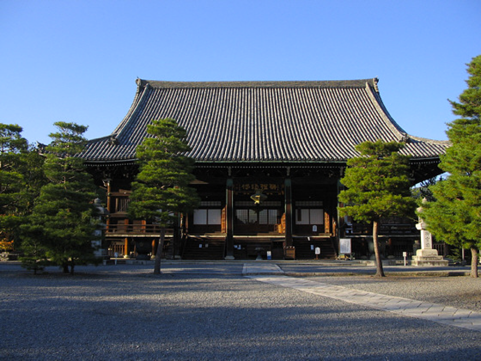
Fig. 26) External View Seiryōji Temple Kyoto, Japan
The Buddha of Seiryōji currently resides in the Seiryōji Temple in Kyoto, Japan year-round but is only able to be viewed on a monthly basis.
(Credit: Tale of Genji)
{kind=link}
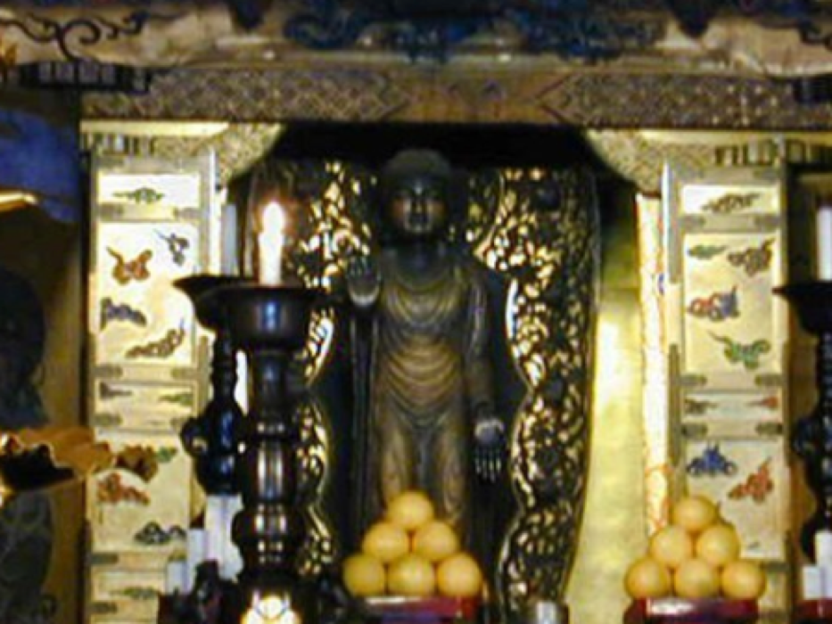
Fig. 27) Altar containing the Buddha of Seiryōji
The Buddha of Seiryōji is displayed above eye level on this high altar and is only able to be viewed once a month on the eight day. Therefore, it is implied that viewing the Buddha of Seiryōji is secondary to its mere presence in the Temple of Seiryōji and perhaps even that the devotional icon gains some of its power by maintaining its mysteriousness.
(Credit: Hidden Buddhas: Seiryōji)